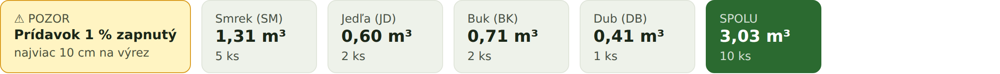
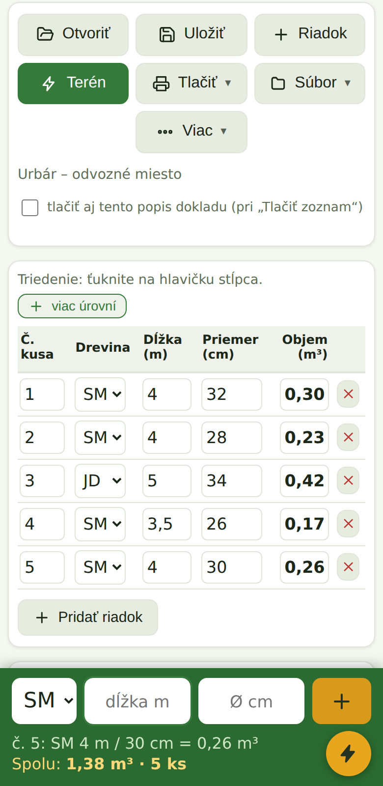
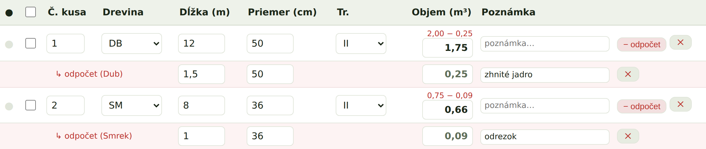
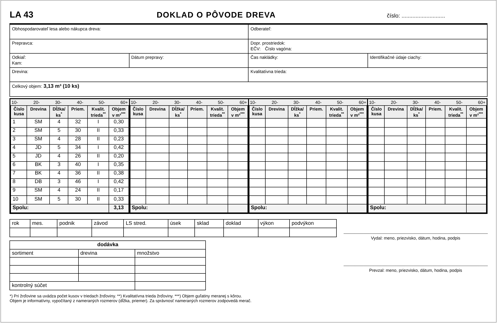
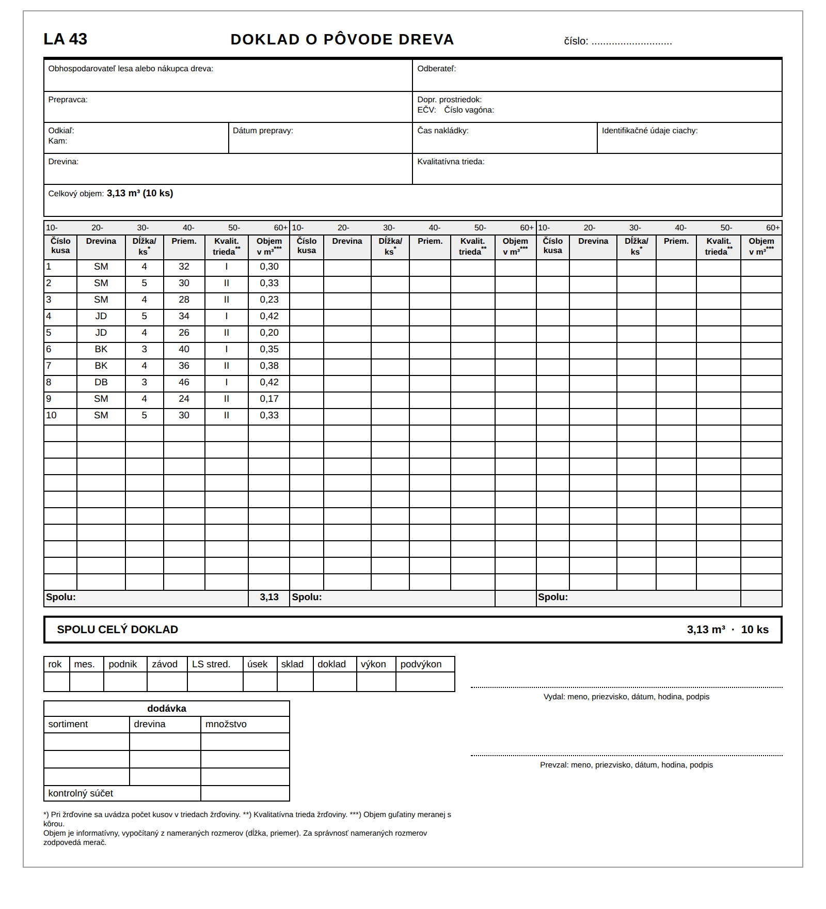

Podklad k fakturácii: program vezme cenu €/m³ podľa kvalitatívnej triedy každého kusa a spočíta cenu dokladu.

Voliteľný odpočet prídavku na dĺžku 1 %: z nameranej dĺžky program určí menovitú (nameraná ÷ 1,01 – napr. 4,04 m → 4,00 m) a z nej počíta objem. Na výber sú dva režimy – najviac 10 cm na výrez alebo 1 % z celej dĺžky bez obmedzenia (podľa dohody odberateľa). Súhrn ukazuje, ktorý režim je aktívny.
Všetko na kubíkovanie na jednom mieste
Od merania kusov po úradný doklad — rýchlo, prehľadne a spoľahlivo.
Kompatibilné s STN 48 0009
Objem guľatiny meranej s kôrou (priemer aj dĺžka s kôrou) pre smrek, jedľu, borovicu, smrekovec, buk, dub, topoľ aj príbuzné dreviny. Objem počíta z Huberovho vzorca so zrážkou kôry; výsledky sú kompatibilné s normou STN 48 0009.
Terénny režim
Veľké polia na rýchle zadávanie v lese, bežiaci súčet objemu a kusov. Rukavice ani slnko nevadia.
Úradný doklad LA 43
Doklad o pôvode dreva na jeden klik — na šírku aj na výšku, vytlačíte alebo uložíte do PDF.
Rýchly doklad pre naloženú drevinu
Pri nakladaní na odvoz jednoducho zaškrtnete, ktoré kusy sa naložili — a LA 43 sa vytvorí len pre ne. Za pár sekúnd.
Samostatný doklad pre každú drevinu
Máte všetko v jednom zozname? Program automaticky rozdelí dreviny a vytvorí samostatný LA 43 pre každú z nich.
Skrátenie dĺžok o ľubovoľnú hodnotu
Zadáte, o koľko metrov skrátiť namerané dĺžky, a objem sa hneď prepočíta — s náhľadom pred a po.
Odpočty hniloby a odrezkov
Zadáte chybnú časť kusa a program ukáže hrubý aj čistý objem po odpočte — všetko zdokladované.
Prídavok na dĺžku 1 %
Voliteľne odpočíta prídavok na dĺžku 1 % – z nameranej dĺžky určí menovitú (÷ 1,01) a z nej počíta objem. Na výber najviac 10 cm na výrez alebo 1 % z celej dĺžky bez obmedzenia.
Cenník podľa triedy a fakturácia
Zadáte cenu €/m³ na drevinu aj podľa kvalitatívnej triedy (I, II, III.A–D). Program vyberie cenu podľa triedy kusa a spočíta podklad k faktúre.
Súčty a štatistiky
Priebežné súčty podľa drevín, počet kusov, objem a cena — prehľad naprieč zákazkami.
Triedenie a výber na viac úrovní
Zoradíte kusy podľa dreviny, dĺžky, priemeru či objemu — aj kombinovane. Označené kusy použijete na doklad či prepočet.
Spojenie viacerých dokladov
Načítané uložené súbory pridáte do aktuálneho dokladu — z viacerých zoznamov spravíte jeden.
Viac dokladov naraz a archív
Otvorené doklady v záložkách, archív s uložením a vyhľadávaním — nič sa nestratí.
Tmavý režim a veľké písmo
Prehľadné aj na ostrom slnku alebo pre slabší zrak — jedným tlačidlom zväčšíte celé ovládanie.
Windows · Android · Linux — aj offline
Ten istý program na počítači aj v mobile, funguje bez internetu. Doklady prenesiete medzi zariadeniami. Aktualizácie zdarma.
Ukážky z programu
Od rýchleho zadávania kusov v teréne až po hotový úradný doklad.
Terénny režim v mobile

Veľké polia, výber dreviny a bežiaci súčet objemu — kus zadáte aj jednou rukou.
Odpočet hniloby a odrezkov

Zadáte chybnú časť kusa (hniloba, odrezok) a program ukáže hrubý aj čistý objem po odpočte — napr. 2,00 − 0,25 → 1,75 m³.
Úradný doklad LA 43 — na šírku aj na výšku

Na šírku — 4 stĺpce kusov na stranu

Na výšku — 3 stĺpce kusov na stranu
Stiahnutie
Vyberte verziu pre svoj systém. Po inštalácii dostanete kód zariadenia — pošlite nám ho a vydáme vám licenciu.
Napíšete nám, dostanete faktúru a odkaz na stiahnutie. Alebo si najprv vyžiadate skúšobnú verziu s dočasnou licenciou. Inštalácia je bežná — Ďalej, Dokončiť.
Aktivujete licenciu
Program ukáže kód zariadenia, pošlete nám ho a my vám vydáme licenciu presne na vaše zariadenie.
Kubíkujete
Zadávate kusy, program počíta objem, robí súčty a tlačí doklady. Funguje aj offline.
Cena
Jednoducho a férovo — bez skrytých poplatkov.
Odporúčané
Jednorazová licencia
129 €
licencia navždy, na 1 zariadenie
Všetky funkcie a dreviny
Windows, Android aj Linux
Aktualizácie zdarma
Ročné predplatné
49 € / rok
nižší vstup, priebežné aktualizácie
Rovnaké funkcie
Kedykoľvek zrušíte
Používate program na počítači aj v mobile? Druhé zariadenie so zľavou −50 %.
 Kubikovač guľatiny
AGROBERIT s. r. o.
Kubikovač guľatiny
AGROBERIT s. r. o.